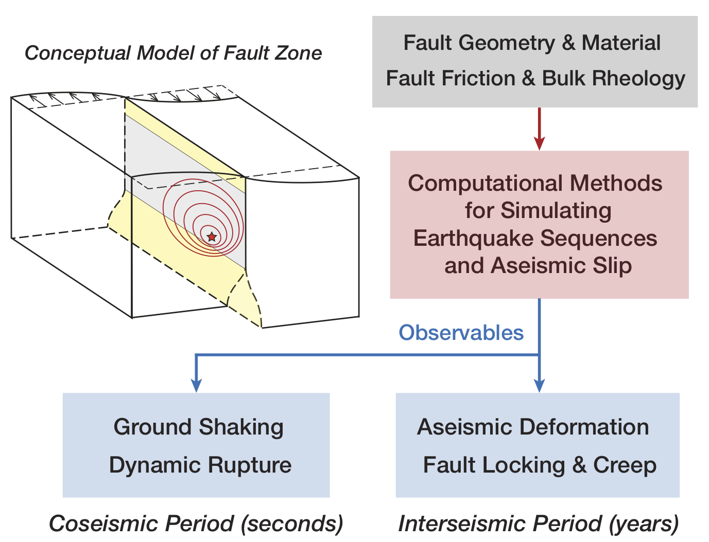
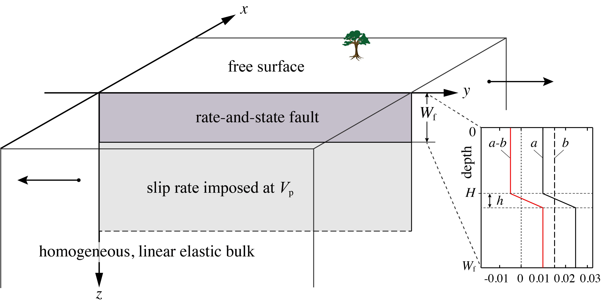

Numerical simulations of Sequences of Earthquakes and Aseismic Slip (SEAS) have made great progress over the past decades to address important questions in earthquake physics and fault mechanics. Significant challenges in SEAS modeling remain in resolving multiscale interactions between aseismic fault slip, earthquake nucleation, and dynamic rupture; and understanding physical factors controlling observables such as seismicity and ground deformation. The increasing capability and complexity of SEAS modeling calls for extensive efforts to verify and advance these simulations with rigor, reproducibility, and broadened impact. Over the past year, we have initiated a community code-verification exercise for SEAS simulations, supported by SCEC (the Southern California Earthquake Center). Through this exercise, we aim to develop best practices, and code-verification and simulation tools for SEAS modeling that would benefit a larger community.

We have completed our first two benchmarks, designed to test the capabilities of different computational methods in correctly solving a mathematically well-defined, basic problem in crustal faulting. These benchmarks are based on a 2D antiplane problem, with a 1D planar vertical strike-slip fault obeying rate-and-state friction, embedded in a 2D homogeneous, linear elastic half-space. The fault has a shallow seismogenic region with velocity-weakening friction and a deeper velocity-strengthening region, below which a relative plate motion rate is imposed. A periodic sequence of spontaneous, quasi-dynamic earthquakes and slow slip are simulated in the model. We have established an online platform for modelers to upload and compare simulation results. The comparison of ~20 models from 11 groups using different numerical methods (FDM/FEM/BEM) show excellent general agreements. We found that domain truncation and boundary conditions strongly influence interseismic fault stressing, earthquake recurrence, and coseismic rupture speed, and that agreement between models is only achieved with sufficiently large domain sizes. Building on this initial success, we are working toward more complex scenarios involving variable event sizes, a dipping fault, and a 3D problem in our upcoming benchmarks.

Online benchmark platform
http://scecdata.usc.edu/cvws/seas/
Our SCEC Workshop in April, 2018
https://www.scec.org/workshops/2018/cvws-seas
Our SCEC Workshop in November, 2018
https://www.scec.org/workshops/2018/seas
Our presentations at 2018 SCEC/AGU
Jiang, J., & Erickson, B. A. (2018, 08). Advancing Simulations of Sequences of Earthquakes and Aseismic Slip [SEAS]. Oral Presentation at 2018 SCEC Annual Meeting. SCEC Contribution 8325
Erickson, B. A., Jiang, J., Barall, M., Lapusta, N., Dunham, E. M., Harris, R. A., Abrahams, L., Allison, K. L., Ampuero, J., Barbot, S. D., Cattania, C., Elbanna, A. E., Fialko, Y., Idini Zabala, B., Kozdon, J. E., Lambert, V. R., Liu, Y., Luo, Y., Ma, X., Segall, P., Shi, P., & Wei, M. (2018, 07). The Community Code Verification Exercise for Simulating Sequences of Earthquakes and Aseismic Slip (SEAS): Initial Benchmarks and Future Directions. Poster Presentation at 2018 SCEC Annual Meeting. SCEC Contribution 8214
Erickson, B. A., Jiang, J., Barall, M., Lapusta, N., Dunham, E. M., Harris, R. A., Abrahams, L., Allison, K. L., Ampuero, J., Barbot, S. D., Cattania, C., Elbanna, A. E., Fialko, Y., Idini Zabala, B., Kozdon, J. E., Lambert, V. R., Liu, Y., Luo, Y., Ma, X., Segall, P., Shi, P., & Wei, M. (2018, 07). The Community Code Verification Exercise for Simulating Sequences of Earthquakes and Aseismic Slip (SEAS): Initial Benchmarks and Future Directions. AGU Fall Meeting Abstracts, 2018